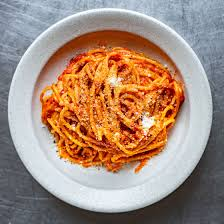

Home
Tomato sauce

Just like Nonna used to make.
Ingredients
- 1 x Good quality tinned tomatoes
- 1 x Bunch basil
- 4 Tbsp Olive oil
- 6 Cloves Garlic
- Salt
Method
- Slice your garlic width ways as thin as you can
- Add your olive oil, basil and garlic to a frying pan - do not preheat the pan!
- Get the heat on low and slow until you start to smell garlic
- Add in your chopped toms and increase the heat until bubbling
- Bring the heat right back down and simmer until you're hungry
- (Optional) throw in a handful of parmesan towards the end
- Serve with your favourite pasta, bread, chips, your shout